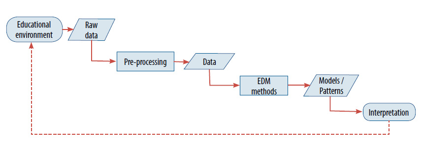
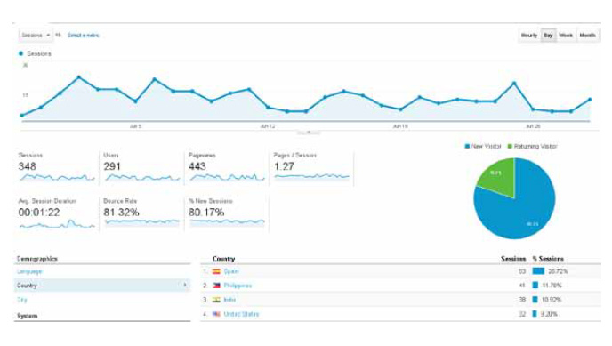
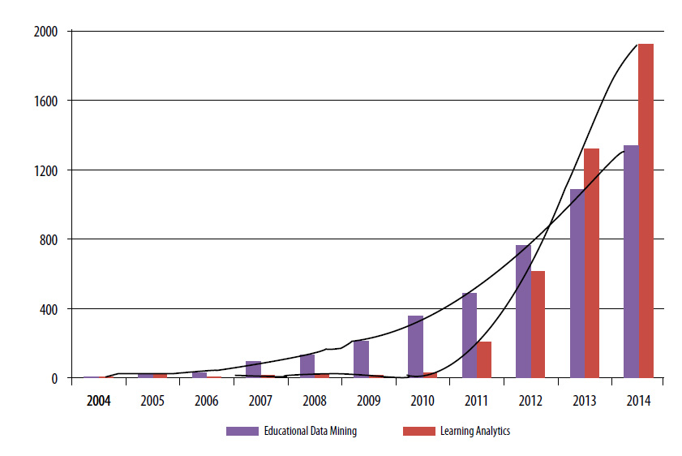

Email this article
Email this article  Hide
Hide
 Show all
Show all
1. Introduction
In the traditional educational model, instructors have the principal role in the learning process. Students are assumed to have basic knowledge and skills, while instructors are expected to share their knowledge and experience. Learning is tested by means of proctored exams and homework. Before the Internet era, there were several types of distance-education models based on TV programmes, manuals or recorded audios/videos. Typically, instructors were available to solve doubts by phone or mail. Although they allowed learning from home and presented a flexible timetable, the lack of interactivity hindered the learning process.
The Internet has dramatically changed the system, since most institutions have become interested in providing online courses. Besides the fact that they do not require large investments, these courses are not restricted to a specific geographical location or timetable, which increases the number of potential students. As a result, universities dedicated only to online education have emerged and traditional universities have expanded their offer with b-learning (hybrid classroom and online learning) and e-learning (pure online learning) courses.
As Daradoumis, Juan, Lera-López, & Faulin (2010a) state, e-learning has many more positive aspects: (a) it favours interactive communication among students, and between students and instructors; (b) it promotes continuous evaluation based on tests, and individual and collaborative activities; (c) it contributes to the development of technical skills; and (d) it helps to reduce the gap between theory and practice (e.g., Marquès, Lazaro, Juan, Vilajosana, Domingo, & Jorba, 2013). The role of the instructor is to design, organize and support learning experiences. While in the traditional model all students listen to the same lectures and complete the same homework in the same sequence and at the same pace (Bienkowski, Feng, & Means, 2012), this model promotes a more personalized learning process, in which the student has an active role. However, e-learning courses also present higher dropout rates due to the fact that distance education may create a sense of isolation in students, which can feel disconnected from the other students, the instructors and the university (Juan, Daradoumis, Faulin, & Xhafa, 2009b).
E-learning courses may be provided through Learning Management Systems (LMS) such as Moodle, Sakai and ILIAS, or Learning Platforms such as Knewton and DreamBox. A characteristic of these courses is the vast amount of data that can be collected. In addition to student’s background and performance data, each action carried out (reading files, participating in forums, sending messages, or visiting recommended links, for example) leaves a digital fingerprint.
There are two fields of research devoted to analyzing this data: Educational Data Mining (EDM) and Learning Analytics (LA). Their overwhelming popularity is almost certainly due to several factors: (a) there is interest in employing a data-driven approach to make better decisions, as it is usual in business intelligence or analytics (Daradoumis, Rodríguez-Ardura, Faulin, & Martínez-López, 2010b); (b) there are powerful statistical, machine-learning and data-mining methods and techniques to search for patterns in data and construct predictive models or decision rules that can be easily adapted to educational data; (c) generating data is relatively easy, and current computer capacity allows its storage and processing; (d) because of the financial crisis and fierce competition, universities are under pressure to reduce costs and increase income by exploiting the growing educational demands from developing countries, reducing dropout rates and improving course quality.
The main goal of both EDM and LA is to extract information from educational data to support education-related decision making. Information may be oriented towards several stakeholders (Daradoumis et al., 2010a). Instructors may get more objective feedback to evaluate both the structure of their courses and the effectiveness of the learning process. Monitoring the students’ learning process may help to rapidly spot those having difficulties in following the course, and units that generate more confusion. It can be a complex and time-consuming task without the appropriate tools (Juan, Daradoumis, Faulin, & Xhafa, 2009a). Students may receive recommendations about resources according to their performance, goals and motivations, may graphically analyze the outputs of their learning process, compare them with those of the rest of the class, and observe the performance and contributions related to collaborative activities. Managers may use information to design a better allocation of human and material resources to improve the overall quality of their academic offer. Finally, researchers may test and adapt their theories based on educational data.
Some initial similarities and differences between EDM and LA will be discussed in this paper. From a general perspective, it can be argued that EDM focuses more on techniques and methodologies, while LA deals more with applications. However, as we will see, these differences seem to be less and less noticeable as both fields evolve over time. In addition, the most significant barriers to EDM and LA applications in educational environments and a few hot research topics will be mentioned. Accordingly, the contributions of this work are: (a) to analyze the origins and particularities of these fields of research; (b) to provide an overview of the associated literature; (c) to examine how both knowledge areas have evolved in recent years and to discuss their possible convergence; and (d) to present some of the challenges and new trends, including those related with Big Data and MOOCs.
The rest of this paper is organized as follows: Section 2 and 3 offer an introduction to EDM and LA, respectively; Section 4 reviews some common methods, and Section 5 points out the main similarities and differences between these concepts; Section 6 identifies the principal issues that still need to be addressed and explores the latest lines of research; finally, general conclusions are drawn in Section 7.
2. Educational Data Mining
EDM develops and adapts statistical, machine-learning and data-mining methods to study educational data generated basically by students and instructors. Their application may help to analyze student learning processes considering their interaction with the environment (Baker, Costa, Amorim, Magalhães, & Marinho, 2012). Initially, some workshops were held at conferences on Artificial Intelligence in Education and Intelligent Tutoring Systems. The first International Conference on EDM (Baker, Barnes, & Beck, 2008) was held in 2008 in Montreal. It has been held every year since then. The most popular societies are the International Educational Data Mining Society (http://www.educationaldatamining.org/) created in 2011, and the IEEE Task Force of Educational Data Mining (http://datamining.it.uts.edu.au/edd/) formed in 2012.
The related literature is extensive and varied. A commonly cited report is presented in Bienkowski et al. (2012), who introduce EDM and LA and also their bases, implementation challenges and application areas. Special consideration is given to Adaptive Learning Systems, which adapt learning experiences based on model predictions. As far as we are concerned, there are three books that detail applications and methods: Romero & Ventura (2006), Romero, Ventura, Pechenizkiy, & Baker (2010), and Peña-Ayala (2014). Romero & Ventura (2010) present a survey with more than 300 references.
Applications of EDM methods comprise several steps (Figure 1). Initially, a design is planned, i.e., the main aim of the study and the required data are identified. Afterwards, the data is extracted from the appropriate educational environment. Frequently, data will need to be pre-processed, since it may come from several sources or have different formats and levels of hierarchy. Models or patterns are obtained from applying EDM methods, which have to be interpreted. If the conclusions suggest applying changes to the teaching/learning process or are not conclusive (because the problem has not been adequately addressed, the raw data are small or not suitable, or the selected methods are not powerful enough), the analysis is performed again after modifying the teaching/learning process or the study design.
Figure 1. Overview of how EDM methods are applied

There are increasing numbers of EDM applications. According to Baker et al. (2012), they can be grouped into the following four categories:
- Student modelling: student data (including knowledge, motivations, etc.) and EDM techniques may be used to design a customized learning process by modelling differences between students.
- Modelling of the knowledge structure of the domain: methods combining psychometric modelling frameworks with space-searching algorithms are created for discovering data-based domain models.
- Pedagogical support: efficient educational support may be identified.
- Scientific research: applications may help to develop and test educational scientific theories and to formulate new hypotheses.
Specific applications are described in Romero & Ventura (2013): predicting student performance, scientific inquiry, providing feedback for supporting instructors, personalizing/recommending to students, creating alerts for stakeholders (in real time in the event of undesirable student behaviours), student modelling (developing and tuning cognitive models of students, which represent their skills and declarative knowledge), domain modelling, student grouping/profiling, constructing courseware, planning and scheduling (related to courses, student scheduling, resource allocation, etc.), and parameter estimation.
A huge variety of tools have been designed and implemented to deploy EDM methods. However, most of these tools include a limited subset of the existing methods, are not publicly available or have been tested only in case studies. García, Romero, Ventura, & de Castro (2011) provide a list of them and point out that they are usually too complex for instructors without a background in data mining. Besides being easy to interpret and use, tools should be fast, especially in monitoring learning processes, where risk of dropouts and group internal conflicts may be better addressed if instructors are alerted before they occur (Juan et al., 2009a).
While most LMSs incorporate their own tools to automatically generate customizable statistics reports of course development, these are often quite basic. For instance, Moodle (https://moodle.org/) allows several types of report to be generated: (a) logs for selected activities, students, items and periods of time; (b) live logs, which include recent activity; (c) activity reports, presenting the numbers of views of each activity in a course; (d) course participation, analyzing the actions of selected students for a given period and activity; and (e) data on activity completion. Blackboard (http://es.blackboard.com/sites/international/globalmaster/) also offers several types of report, e.g., (a) user activity overview, which displays overall system and course activity for all students; (b) user statistics, consisting of the average number of students and other users per month and per day; (c) user activity in forums; and (d) user activity in groups. Another interesting tool that can be easily employed is Google Analytics (Figure 2). It can provide information about the number of visits, pages visited, the average duration of each visit, demographics, etc. Regarding monitoring student activity and performance, Lera-López, Faulin, Juan, & Cavaller (2009) review the tools provided by Sakai, WebCT/Blackboard and Moodle.
Figure 2. Example of a Google Analytics report

3. Learning Analytics
According to the call of the First International Conference on Learning Analytics and Knowledge (LAK) (https://tekri.athabascau.ca/analytics/), LA can be defined as the measurement, collection, analysis and reporting of data about learners and their contexts, for the purposes of understanding and optimising learning and the environments in which it occurs. The first International Conference on LAK (Long, Siemens, Conole, & Gašević, 2011) was held in 2011, also in Canada. It has been held annually since then. The most active professional society was founded in the same year: the Society for Learning Analytics Research (SoLAR) (http://www.solaresearch.org).
The book by Larusson & White (2014) is one of the main LA contributions to the literature. It includes the latest theories, findings, strategies, tools and case studies, and focuses on the following uses: (a) how to enhance student and faculty performance; (b) how to improve student understanding of course material; (c) how to assess and attend to the needs of struggling learners; (d) how to improve accuracy in grading; (e) how to allow instructors to assess and develop their own strengths; and (f) how to encourage more efficient use of resources at the institutional level.
The basic steps to test a learning/teaching process-related hypothesis are the same as those explained for EDM: an iterative process in which data is extracted from an educational environment and pre-processed before applying computational/quantitative methods in order to support stakeholders (instructors, course managers, etc.) when making decisions.
4. Common methods in EDM and LA
Most methods applicable to educational data are employed in both EDM and LA. The most popular are related to prediction, clustering and relationship mining. However, there are many more that cover a wide range of applications. The methods, their descriptions and a few examples are shown in Table 1.
Baker & Yacef (2009) study the proportion of works employing each group of methods during the period from 1995 to 2005 (using data extracted from Romero & Ventura, 2007) and from 2008 to 2009 (using data from Baker et al., 2008, and Barnes, Desmarais, Romero, & Ventura, 2009). Papers from the first period mainly involved relationship mining methods (43%) or prediction methods (28%). Human judgment or exploratory data analysis (17%) and clustering (15%) were also popular. In contrast, relationship mining in the next period slipped to 5th place (9%), while prediction methods reached 1st place (42%, papers from 2008 only). The proportion using human judgment and clustering methods did not change considerably (12% and 15%, respectively). Discovery with models gained representation (19%), since no paper from the first period used this method. Also worthy of note is the importance of item response theory, Bayesian nets and Markov decision processes (28%).
Table 1. Common EDM-LA methods. Source: adapted from Romero & Ventura (2013)
|
Method |
Goal/description |
Key applications |
Example |
|---|---|---|---|
|
Prediction |
To infer a target variable from some combination of other variables. Classification, regression and density estimation are types of prediction methods. |
Predicting student performance and detecting student behaviours. |
Yadav, & Pal (2012) |
|
Clustering |
To identify groups of similar observations. |
Grouping similar materials or students based on their learning and interaction patterns. |
Antonenko, Toy, & Niederhauser (2012) |
|
Relationship mining |
To study relationships among variables and to encode rules. Association rule mining, sequential pattern mining, correlation mining and causal data mining are the main types. |
Identifying relationships in learner behaviour patterns and diagnosing student difficulties. |
Kinnebrew, & Biswas (2012) |
|
Distillation of data for human judgment |
To represent data in intelligible ways using summarization, visualization and interactive interfaces. |
Helping instructors to visualize and analyze the ongoing activities of the students and the use of information. |
Baker, Corbett, & Wagner (2006) |
|
Discovery with models |
To employ a previously validated model of a phenomenon as a component in another analysis. |
Identification of relationships among student behaviours and characteristics or contextual variables. Integration of psychometric modelling frameworks into machine-learning models. |
Jeong, & Biswas (2008) |
|
Outlier detection |
To point out significantly different individuals. |
Detection of students with difficulties or irregular learning processes. |
Ueno (2004) |
|
Social network analysis |
To analyze the social relationships between entities in networked information. |
Interpretation of the structure and relations in collaborative activities and interactions with communication tools. |
Palazuelos, García-Saiz, & Zorrilla (2013) |
|
Process mining |
To obtain knowledge of the process from event logs. |
Reflecting student behaviour in terms of its examination traces, consisting of a sequence of course, grade and timestamp. |
Trćka, Pechenizkiy, & Aalst (2011) |
|
Text mining |
To extract high-quality information from text. |
Analysing the contents of forums, chats, web pages and documents. |
Tane, Schmitz, & Stumme (2004) |
|
Knowledge tracing |
To estimate student mastery of skills, employing both a cognitive model that maps a problem-solving item to the skills required, and logs of students’ correct and incorrect answers as evidence of their knowledge on a particular skill. |
Monitoring student knowledge over time. |
Lee, & Brunskill (2012) |
|
Nonnegative matrix factorization |
To define a matrix M of positive numbers with student test outcome data that may be decomposed into two matrices: Q, which represents a matrix of items, and S, which represents student mastery of skills. |
Assessment of student skills. |
Desmarais (2011) |
5. Similarities and differences between EDM and LA
The overlap between both fields of research is certainly considerable. Even so, some differences are highlighted in the literature. EDM and LA have the same goal: improving education quality by analysing huge amounts of data to extract useful information for stakeholders. Representative companies in other sectors, such as industry, finance or healthcare, have already introduced statistical, machine-learning and data-mining techniques to achieve better performance through decisions based on historical data. The popularity of these fields of research has been growing since the early 2010s (Figure 3), although EDM research started a few years beforehand. It is expected that these fields will continue to expand (Johnson, Adams, & Cummins, 2012), due to the potential benefits (for students, instructors, administrators, researchers and society in general) and the relevance of current research based on Big Data.
Figure 3. Evolution of EDM and LA references in Google Scholar (May, 2015)

According to Siemens & Baker (2012), it is possible to identify five key distinctions between EDM and LA. These are:
- Discovery: in EDM, researchers are interested in automated discovery, and leveraging human judgment is a tool for that; in LA it is quite the opposite, leveraging human judgement is the aim.
- Reduction and holism: EDM reduces systems to components and explores them and their relationships, while LA wants to understand whole systems.
- Origins: EDM is rooted in educational software and student modelling; in contrast, LA origins are related to the semantic web, “intelligent curriculum”, outcome prediction and systemic interventions.
- Adaption and personalization: EDM performs automated adaptation, whereas LA informs and empowers instructors and students.
- Techniques and methods: EDM employs more techniques and methods of classification, clustering, Bayesian modelling, relationship mining, discovery with models, and visualization; while LA focuses on social network analysis, sentiment analysis, influence analysis, discourse analysis, learner success prediction, concept analysis and sense-making models.
According to the above authors, these differences represent broad trends in each community and, as a consequence, they do not define the corresponding scopes. A similar idea is expressed in Baker & Inventado (2014), where it is stated that “the overlap and differences between the communities is largely organic, developing from the interests and values of specific researchers rather than reflecting a deeper philosophical split”.
Bienkowski et al. (2012) consider that LA covers more disciplines than EDM does. In addition to computer science, statistics, psychology and the learning sciences, LA is related to information science and sociology. Therefore, even if the border between both fields is fuzzy and their differences are partly based on their origins and trends, they are still significant for these authors. Moreover, as upheld in Siemens & Baker (2012), the co-existence of both research communities leads to a more diverse and relevant contribution to society. Consequently, communication and competition between both should be encouraged.
6. Challenges and new trends
In spite of the high expectations and the relatively extensive literature on EDM and LA, they are relatively new fields of research and, as a result, several issues still need to be addressed. In addition, technological progress is driving us to the era of Big Data, which represents an important paradigm shift and offers multiple opportunities.
An important barrier to the implementation of EDM and LA methodologies is the lack of knowledge (Wolf, Jones, Hall, & Wise, 2014), both theoretical and practical, among a significant proportion of instructors and managers with regard to employing the required tools, correctly understand the outputs, drawing the appropriate conclusions or deciding which actions to take. In order to mitigate this problem, it is important to increase acceptance and develop a data-driven culture in educational environments (Romero & Ventura, 2013). Researchers are already helping in this transition by disseminating their results, collaborating with a high number of instructors and/or students to assess their proposals (e.g., García et al., 2011) and detailing their experiments (data, methods, etc.). As shown in this article, there are numerous tools to facilitate data analysis, but many have been implemented in small experiments. We will only be able to obtain more satisfactory and generic results by analyzing more students, courses and institutions.
Another significant barrier, discussed in Greller & Drachsler (2012), is related to ethics and personal privacy. Ethics must be taken into account in all stages, from data gathering to the interpretation of outputs and decision making, for instance, by avoiding statements that could lead to discriminatory treatments when working with gender, social status, race, home country, religious beliefs, ideology or disability. Similarly, issues related to the ownership of student data, which differ from country to country, need to be considered.
Numerous applications of EDM and LA methodologies in online environments deal with the use of Big Data in educational environments. Big Data refers to data with sizes beyond the ability of common software tools to capture, store, manage and process in a reasonable amount of time (Snijders, Matzat, & Reips, 2012). The main differences between Big Data and Analytics are volume, speed and variety (McAfee & Brynjolfsson, 2012). In the past, obtaining, storing and processing data was an expensive and time-consuming procedure. Consequently, most studies attempted to draw conclusions from a sample of individuals that could be generalized to a population. However, current technology enables researchers to work with much more individuals and variables, obtaining richer information and insights. It leads to faster and more robust results, which should translate into more efficient decisions. The combination of Big Data and LA constitutes a promising field for governments (e.g., Johnson, Adams, Cummins, Estrada, Freeman, & Ludgate, 2013) and universities (http://openthoughts-analytics.blogs.uoc.edu/) to explore.
Also, Massive Open Online Courses (MOOCs), typically managed by recognized instructors from prestigious universities, represent a new and prominent research topic. Besides being a marketing strategy for universities, they enable students from around the world to take modern and diverse courses for free, which helps to reduce the educational-opportunity divide associated with economic inequalities. According to Siemens (2013), the term “MOOC” is employed to refer to two different concepts: connectivist MOOCs (cMOOCs), which are based on a connectivist pedagogical model that uses freely available online resources, and edX MOOCs (xMOOCs), which replicate online the traditional model in which instructors share their knowledge and experience, and grade student assignments. The popularity of xMOOCs has been growing since 2012, when several large universities started to offer them. Coursera, edX, or Class2Go are some well-known platforms. These courses are usually characterized by a large number of enrolled students, which generates a scalability challenge (Kay, Reimann, Diebold, & Kummerfeld, 2013), very high dropout rates and very different patterns of participation (Clow, 2013). Nevertheless, several authors agree that even if a high dropout rate raises concerns about a course, it is needed to take into account two elements: (a) the first exploratory phase, where students assess the content, structure and resources, and may decide not to continue; and (b) the diverse objectives, learning styles or schedules of students. Therefore, non-completion cannot be directly interpreted as a failure or problem. The maximum potential of EDM and LA in MOOCs stems from two facts: the diversity of students and the extremely high student-instructor rate. Participants may have different origins, backgrounds, maturity, experience, education levels, language skills, objectives, needs and learning styles, among others. This, in turn, suggests the relevance of personalizing courses. However, given the student-instructor rates, this is impossible without automated systems. Despite the fact that research on this topic is just emerging and that current MOOC platforms provide limited data storage, a few interesting works on adaptive MOOCs (aMOOCs) already exist. For example, Daradoumis, Bassi, Xhafa, & Caballé (2013) propose the use of software agents to improve and personalize management, delivery and evaluation. Agents could help to redesign MOOCs for future cohorts by gathering information on usage patterns, navigation, problematic content areas, tool usage, student profiling, etc. Regarding content, learning/prediction algorithms could be applied by agents to dynamically adjust course content to suit each participant’s profile. Furthermore, agents could be also employed to improve automated testing by adjusting assignment questions according to the participant’s educational level. Sonwalkar (2013) describes the development of the first aMOOC platform, which is implemented using Amazon Web Services’ cloud architecture. A case study of a course of molecular dynamics is analyzed. It considers different learning strategies based on five pedagogies (apprentice, incidental, inductive, deductive and discovery). The adapted learning path of each student is set at the beginning with a diagnostics quiz. As Clark (2013) critically notes, many MOOCs may be described as a set of linear sequential videos, quizzes and assessments reviewed automatically or by peers, while big companies like Google or Amazon employ algorithmic approaches to tailor searches, ads and recommend purchases. Therefore, aMOOCs are expected to become the focus of much more research attention over the coming years.
7. Conclusions
Educational Data Mining (EDM) and Learning Analytics (LA) are both relatively new and promising fields of research that aim to improve educational experiences by helping stakeholders (instructors, students, administrators and researchers) to make better decisions using data. Their growth has been boosted by increasing computer capacity to store and analyze huge amounts of data and the availability of statistical, machine-learning and data-mining methods and techniques.
Online environments are a highly important area of application. On the one hand, they continuously generate data from a number of events such as reading files or participating in forums, with different formats and levels of hierarchy. At the same time, online courses have higher dropout rates than traditional courses. EDM and LA are mainly employed to monitor students and groups (allowing the identification of students that are likely to dropout or fail, or that are not contributing enough in collaborative activities), suggest changes in course structure and tailor learning experiences (recommending material according to motivations and skills, for instance). There is a wide variety of methods and techniques adapted from other disciplines or specially designed to analyze educational data.
Numerous similarities exist between both fields of research, such as goals, methodologies and techniques. However, there are several differences, attributable mostly to their origins and trends. The co-existence of their respective scientific communities leads to competition with positive effects on society.
Despite the high expectations and the amount of works on EDM and LA, their application in educational environments still comes up against some important barriers, such as the lack of a data-driven culture and of fast, comprehensive and easy-to-use and understand tools that could be integrated in the most popular LMSs.
In the era of Big Data, the combination of the current capacity to capture, store, manage and process data in a reasonable amount of time, and data from online learning environments represents an opportunity for researchers into EDM and LA to better explore student learning processes and efficient ways to improve them. An important application is in MOOCs, where data from thousands of students can be employed to redesign courses for future students, relying on navigation and tool usage for example. A much more challenging approach consists in the development of adaptive MOOCs, in which the courses are automatically personalized according to student profiles (needs, objectives, background, country, learning style, etc.) and performance. This is a relatively new research topic that is currently getting much attention from both researchers and companies.